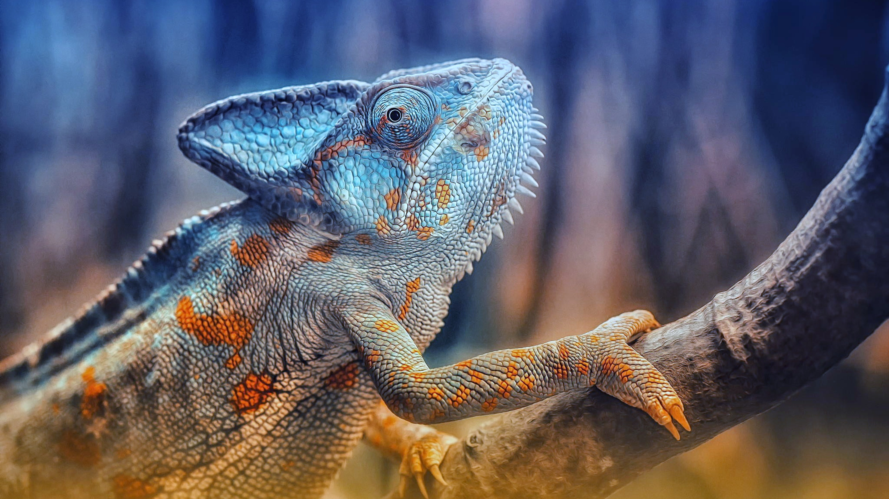
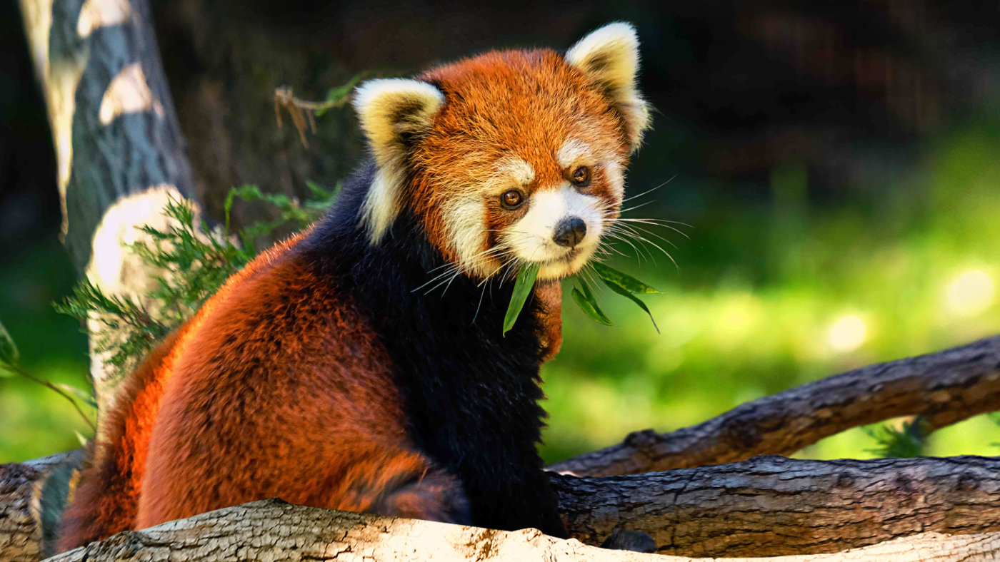
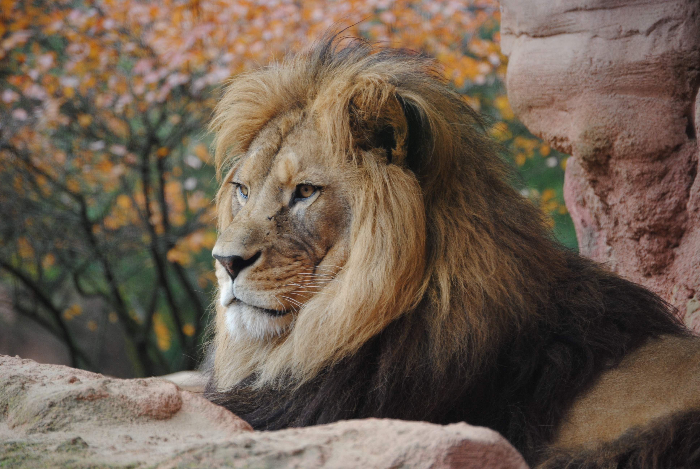
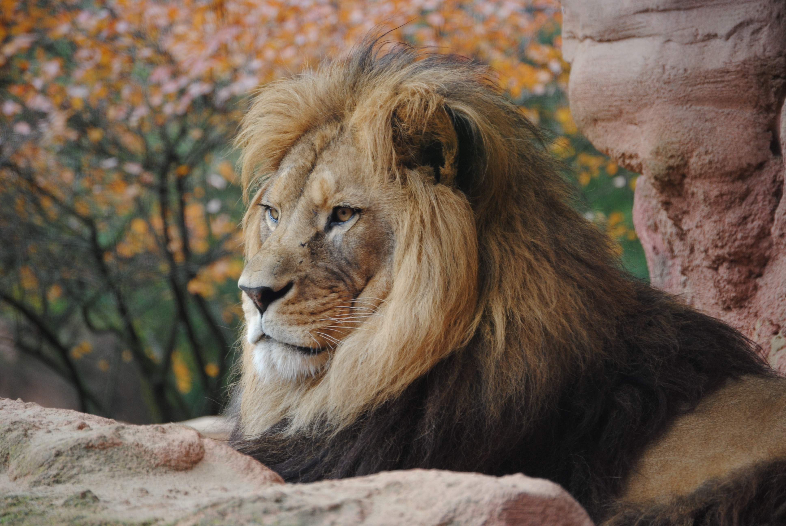
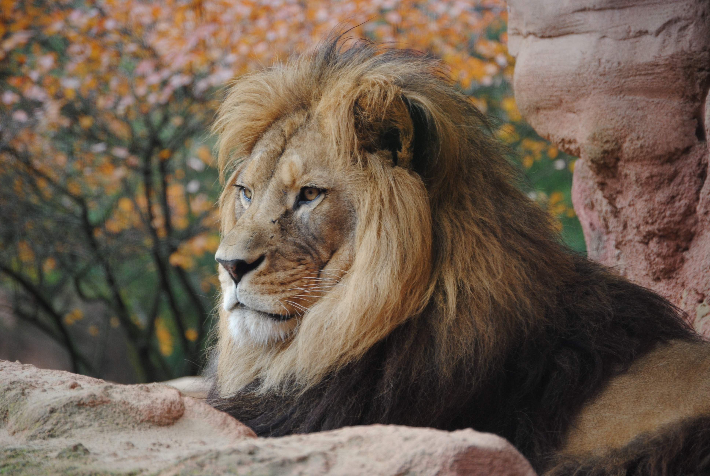

.png)
Welcome to our website dedicated to celebrating the fascinating world of animals! Here, we invite you to embark on an exciting journey through the diverse and awe-inspiring realm of the animal kingdom. From the mighty lions prowling the savannas to the graceful dolphins dancing in the oceans, animals captivate us with their beauty, strength, and unique characteristics. Whether you're a passionate animal lover, a curious adventurer, or simply someone seeking to learn more about the natural world, you'll find something to pique your interest here. Our website is a treasure trove of information about all kinds of animals, big and small, from every corner of the globe. Dive into our articles, photographs, and videos to discover the incredible variety of species that inhabit our planet. Learn about their habitats, behaviors, adaptations, and the vital roles they play in ecosystems around the world. But our mission goes beyond mere fascination. We believe in the importance of raising awareness about conservation and the protection of endangered species. Through education and advocacy, we strive to inspire action to safeguard the future of wildlife and preserve biodiversity for generations to come. Whether you're interested in exotic creatures from faraway lands or the fascinating critters that share our own backyard, our website has something for everyone. Join us as we celebrate the beauty and wonder of animals and explore the intricate web of life that connects us all. Welcome to our wild and wonderful world!




 

